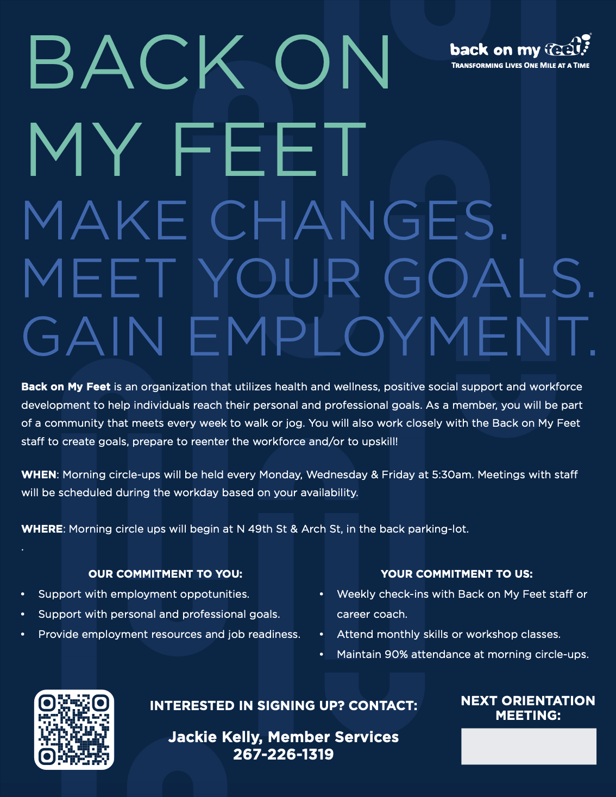
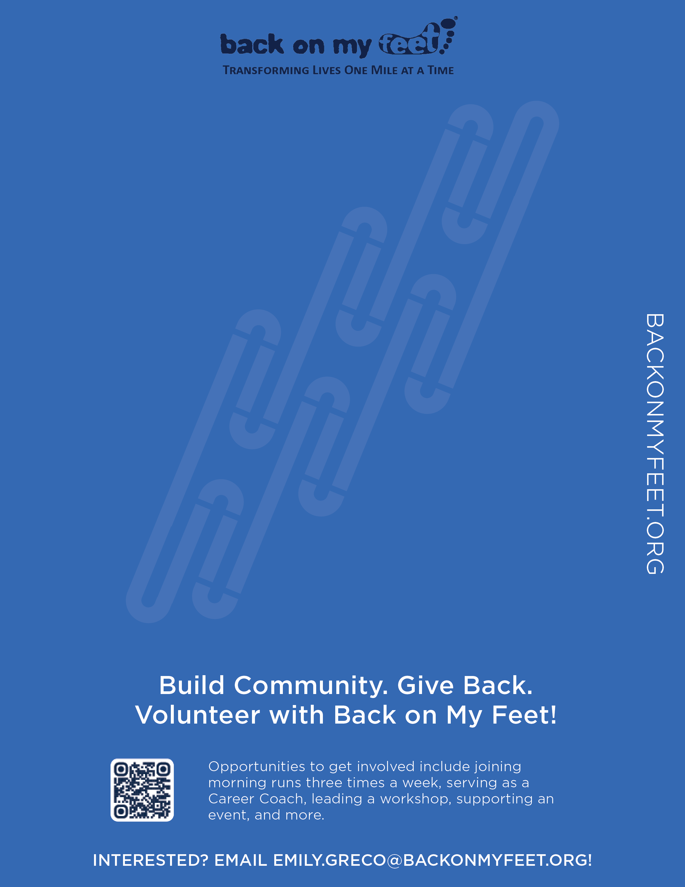
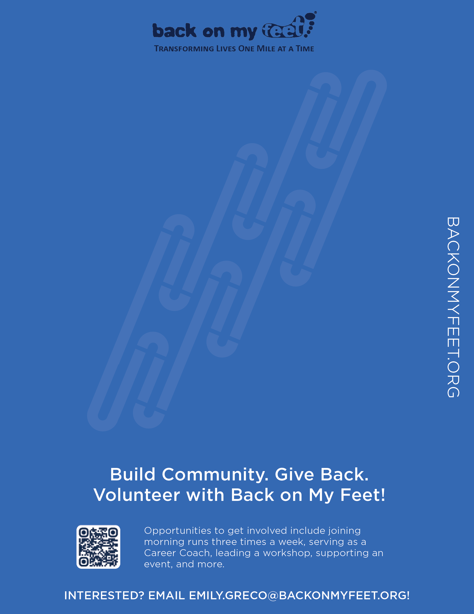
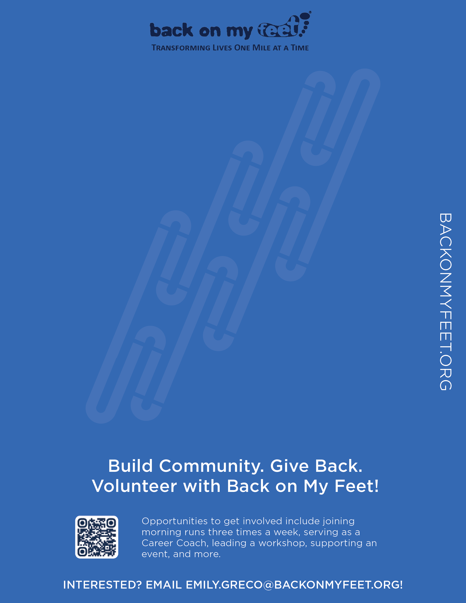
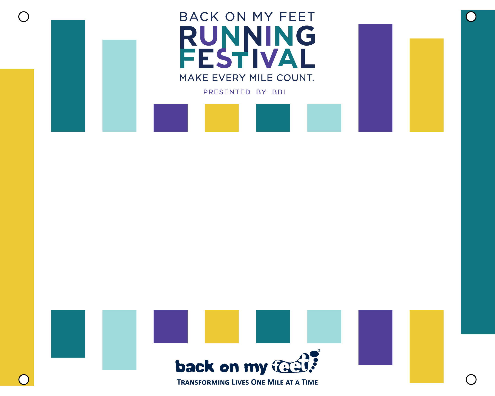
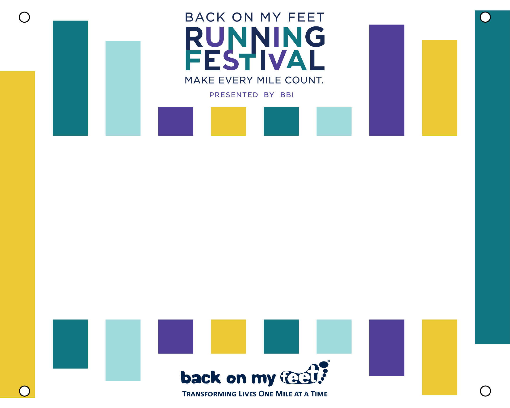

Recruitment
A large part of BomF's operations depend on volunteers and their members. Recruitment must be handled with integrity, approachability, and passion. My designs incorperated rebranding I created, a whole lot of vital information, and eye-catching elements.

 




 


Social Media
When creating social media content for BomF, it was important to consider the audience. The social media accounts were geared towards runners participating in BomF events. Here is a collection of social media tiles I created for race participants to post to show their participation and support of BomF.